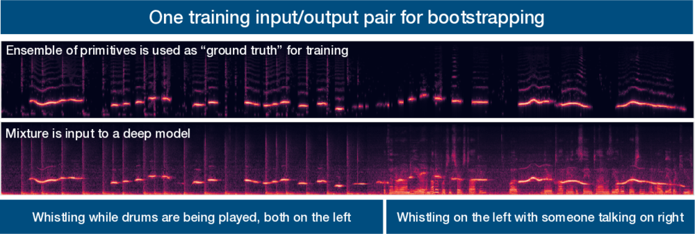

Prem Seetharaman
Senior Research Scientist, Adobe Research

I defended my thesis in September 2019! It was about learning to segment complex auditory scenes into constituent sources without access to ground truth training data. I developed a method for bootstrapping a deep learning model via primitives - hard-wired auditory grouping principles that have been observed in the mammalian auditory cortex. The primitive estimates were then used in concert with a confidence measure to train a deep audio source separation model.
The human auditory system is remarkable, easily parsing the complex mixtures of speech, music, and environmental sounds that we encounter every day. To appreciate the complexity of the task set before our ears, consider this thought experiment: imagine a crowded lake during summer. Boats are traveling across it in different directions and people are swimming and splashing around. All of this activity manifests as waves rippling across the surface of the lake. Two small channels of water extend out from the lake. The activity on the lake causes waves that reach the channels, causing them to swell and recede. Your task is to describe the activity taking place on the lake, such as how many boats there are, their direction of travel, what kind of boats, how many people there are, how far the boats are, etc. The catch is that you can only observe the two small channels extending from the lake. This seems impossible. Yet, the human auditory system deals with precisely this task all the time and does it with astounding efficacy. The lake of activity (the sounds around us) causes waves (sound pressure waves in air) that reach the two channels (our ears). We process these waves in real-time into an understanding of the auditory world around us.
Computer audition is the study of how machines can organize, parse, and understand the auditory ``lake’’ of activity around us. A fundamental problem in computer audition is audio source separation. Source separation is the isolation of a specific sound (e.g. a single speaker) in a complex audio scene, like a cocktail party. Humans, as evidenced by our daily experience with sounds as well as empirical studies manage the source separation task very effectively, attending to sources of interest in complex scenes. In this work, I create computational methods for audio source separation that are inspired by the abilities of humans. It is important to note that algorithms that are inspired by human abilities do not necessarily have to use the same underlying mechanics that humans use to perform these tasks.
Deep learning approaches are currently state-of-the-art for source separation tasks. They are typically trained on many examples (e.g. tens of thousands) where each source (e.g. a voice) was recorded in isolation and then the recordings are artificially mixed together. The mixture and the ground truth decomposition of the mixture are presented to the learner as the desired input/output examples. Although we have large collections of isolated speech, we don’t have large collections of isolated recordings for every arbitrary sound. Artificial mixing also cannot capture the full range of sound source motions, reverberations, and sound radiation patterns that exist in real-world mixtures. This fundamentally limits the range of mixtures and sounds that existing models can learn to separate.
In contrast, humans are never given a decomposition of the complex auditory scenes they encounter, yet they develop broadly robust abilities to parse audio scenes. There is experimental evidence that the brain uses fundamental grouping mechanisms, called primitives, to segment audio scenes even when they are composed of never-before-heard sounds. This, in turn allows learning about sound sources without the requirement to hear them in isolation.
The problems I am concerned with are the following: How can we learn audio source separation models directly from complex auditory scenes instead of from artificial scenes created to give us perfect ground truth? How can we leverage a combination of learned and primitive source separation models to produce robust source separation that performs well even when mixing conditions vary?
My approach for training a deep computer audition model without ground truth is as follows. I first apply primitive audio source separation algorithms to an auditory scene. These algorithms are inspired by human audition, such as our tendencies to group sources by spatial location, repeating vs not repeating, common fate, pitch and time proximity, and so on. Then, I estimate the confidence I have in the labels produced by the primitives. The goal is to focus the learning process for the deep network on time-frequency points whose labels are more likely to be correct. Finally, we train a network using the labels produced by the primitive audio source separation algorithms in conjunction with a modified deep clustering loss function that incorporates the concept of confidence weights. This training methodology makes the network focus on points that we are more confident in. The trained network can then be applied in situations where primitives fail. The result is a source separation model that can learn to segment the auditory scene without ground truth by bootstrapping its understanding of the auditory world using primitive unsupervised audio source separation algorithms